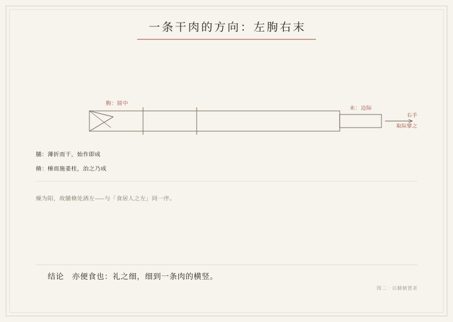

曲礼上 · 一·六十一 · 第 59 课
脯与脩摆上案时，屈折的中段放在左边，末端放在右边。为的是右手从右端取，一擘就开。
说什么事：以脯脩置者，左朐右末。
落在哪一层：器。上节讲一席之层，此节讲一物之向。
为何编在此位：一·六十讲「远近」，此节讲「横竖」；一席之序既明，乃及一物之置之方。
【经】以脯脩置者，左朐右末。
【注】亦便食也。屈中曰朐。
脯脩 疏：「脯训始，始作即成也。脩亦脯也。脩训治，治之乃成。」郑注《腊人》：「薄折曰脯，棰而施姜桂曰锻脩。」
左朐右末 疏：「朐谓中屈也。屈脯朐朐然也。左朐，朐置左也。右末，末，边际；置左，右手取际擘之便也。」
亦便食也 注四字与上节「皆便食也」同贯。脯脩之置，亦为取食之便。
脯脩处酒左，以燥为阳也 疏语。干肉燥，属阳，故在酒之左——与「食居人之左」同一阴阳之序。
摆脯与脩的时候，屈折的中段放在左边，末端放在右边。
一条干肉也有方向。方向不是为好看，是为「取」：右手从右端起，一擘即断；若末端在左，则须左手越取，或整条翻转。礼之细，细到一条肉的横竖，而其理仍是「便」。
第一层 便食的贯彻 上节说「皆便食也」，此节说「亦便食也」。一个「亦」字，见礼之一贯：从四器之位到一条肉之向，皆同一理。
第二层 朐与末 屈中曰朐，边际曰末。一条脯有两端之性：中段屈而厚，末端薄而易擘。置左置右，是依其性而定位。
第三层 燥为阳，处酒左 疏以燥属阳，故居酒左。此条可与「食居人之左」（饭燥为阳）对读：凡燥者皆左。礼以阴阳配位，虽汉人之说，然其序不乱。
第四层 脯与脩之别 脯是薄折而干，脩是棰而加姜桂。同为一类，制作不同，故注并举之。器礼之细，亦及制作之名。
与今日何干 今人待客，果盘、肉干、点心，摆法随手。可取其一：让客人右手一取即得，不必起身、不必翻找。此即「左朐右末」的今义。
| 左 | 右 |
|---|---|
| 脯 | 薄折而干，始作即成 |
| 脩 | 棰而施姜桂，治之乃成 |
| 左朐 | 屈中置左 |
| 右末 | 边际置右，右手取擘之便 |
| 亦便食 | 与上节「皆便食」一贯 |
| 燥为阳 | 脯脩处酒左 |
画案上一条束脩横放：左端屈折成中段（条身扭折、略厚），右端为薄削的末端，末端略翘；束脩以细绳束腰两道。案右角另置一只小壶。不画手、不画人、不写文字。赭色只在束绳与壶盖。
